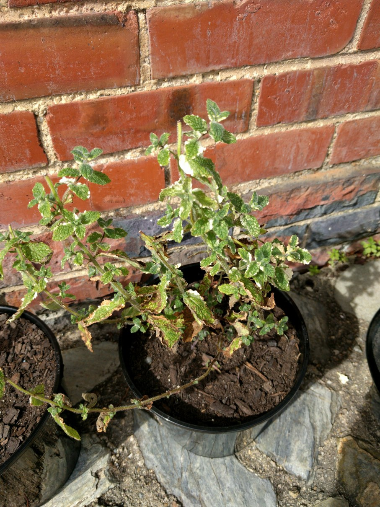

Perennial. Green leaves, creamy white variagations. Creamy white flowers on long spikes. Mild flavour with slight citrus background. Flavours fruit salad, fruit punches, nice with melon, cucumber. Pot pourri. Attractive garnish. Rich moist soil, part shade. Best container grown. 30cm.
